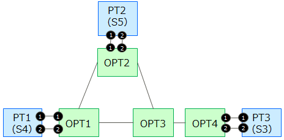

このドキュメントでは、mlo-netと連係動作させる場合の、OPT-Transport Apps of O3 Orchestrator & Controller suiteの設定方法と確認方法を説明します。
OPT-Transport Apps of O3 Orchestrator & Controller suite（ocnrm, pseudoMF, RYU-OE, dummyOptNode with OpenflowJ-OTN）のセットアップが完了している必要があります。セットアップに関してはStarting guideをご覧ください。
ソースコード：Github
Starting guide：O3 Project web page
OPT-Transport Apps of O3 Orchestrator & Controller suiteはocnrm（Optical Core Network Resource Manager）がODENOSを用いて光コアネットワークの仮想リソースを登録し、光パスを上位レイヤのリンクリソースとして提供する抽象化も実施します。
mlo-netとはODENOSを介して連携し、リンクリソースを提供することができます。具体的には、以下のようなに動作します。
1-1. mlo-netが、新たに必要とするリンクをODENOSのネットワークコンポーネントに”ステータス＝Establishing”として書き込む
2-1. ocnrmが、ODENOSから1-1の書き込みに関するイベントを受け、要求に対応する光パスを生成する（OpenFlowによる設定）
2-2. ocnrmが、生成した光パス情報をODENOSに書き込む。その際、光パスに対応するリンクのステータス変更を実施する（Establishingから、Establishedに変更）
3-1. mlo-netは、ODENOSから2-2で行われたステータス変更に関するイベントを受けることで書き込んだリンクが実際にできたことを確認でき、利用可能となる
以下の設定がmlo-netと矛盾しないよう注意します。
- mlo-netが制御するネットワークノードと光コアノードとのバウンダリ情報（パケットトランスポートノードと光コアノードのポート接続情報）
- ODENOSでのネットワークコンポーネント名
- 指定区間での双方向のリソース情報が記載されていること
- QoS情報（帯域、遅延）※帯域は10000、遅延は1または10
- ODENOSのredis-serverが動作するIPアドレス、ポート番号
なお、本連携ではパケットトランスポートノードが3台(mloの連携説明書に記載のS3,S4,S5)あり、それぞれ2ポートずつ光コアネットワークノードと接続していることを前提としています。S5は中継ノードです。

この節では、mlo-net と連携する際に変更すべき設定について具体的に示します。mlo-netでは実際にエミュレータで指定の遅延時間を模擬するため、遅延時間を適切に設定する必要があります。また、指定区間に対して双方向の要求に対応するリソース提供が必要なため、双方向のルート情報が必要となります。またMLOと連携するためのコンポーネントを生成する必要があります。その他の設定については、Githubに登録されたサンプルファイルを用いれば問題ありません。
連携用シェルスクリプトでは、MLOと連携するためのコンポーネントを生成したり、MLOがつくるリソースを生成しないように変更されています。